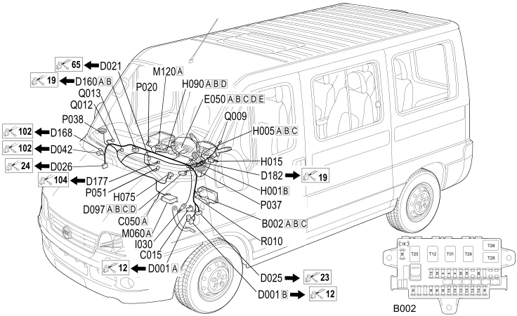

20 DASHBOARD
- Path
- Electrical equipment > 2 WIRING > 20 DASHBOARD
- Kind
- wiring harness
- Applies to
- all engines; all production periods
- Interactive page
- https://sloeber94.github.io/elrnDB-fDct/en/#/244002153
Applies to: all engines; all production periods

Topics that link to this page (47)
- B002A JUNCTION UNIT UNDER DASHBOARD (DASHBOARD)
- B002B JUNCTION UNIT UNDER DASHBOARD (DASHBOARD)
- B002C JUNCTION UNIT UNDER DASHBOARD (DASHBOARD)
- C015 DASHBOARD EARTH, DRIVER'S SIDE (DASHBOARD)
- D001A FRONT/DASHBOARD COUPLING (DASHBOARD)
- D001B FRONT/DASHBOARD COUPLING (DASHBOARD)
- D021 DASHBOARD/AIR CONDITIONING-HEATER COUPLING (DASHBOARD)
- D025 DASHBOARD/LEFT REAR COUPLING (DASHBOARD)
- D026 DASHBOARD/RIGHT REAR COUPLING (DASHBOARD)
- D042 DASHBOARD/COURTESY LIGHTS COUPLING (DASHBOARD)
- D097A SHORT CIRCUITING COUPLING (DASHBOARD)
- D097B SHORT CIRCUITING COUPLING (DASHBOARD)
- D097C SHORT CIRCUITING COUPLING (DASHBOARD)
- D097D SHORT CIRCUITING COUPLING (DASHBOARD)
- D160A DASHBOARD/OPTIONAL DASHBOARD COUPLING (DASHBOARD)
- D160B DASHBOARD/OPTIONAL DASHBOARD COUPLING (DASHBOARD)
- D160B DASHBOARD/OPTIONAL DASHBOARD COUPLING (DASHBOARD)
- D168 COAXIAL CABLE FOR RADIO AERIAL COUPLING (DASHBOARD)
- D168 COAXIAL CABLE FOR RADIO AERIAL COUPLING (DASHBOARD)
- D177 DASHBOARD/TACHOGRAPH COUPLING (DASHBOARD)
- D182 OPTIONAL DASHBOARD/AIR BAG COUPLING (DASHBOARD)
- E050A INSTRUMENT PANEL (DASHBOARD)
- E050B INSTRUMENT PANEL (DASHBOARD)
- E050C INSTRUMENT PANEL (DASHBOARD)
- E050D INSTRUMENT PANEL (DASHBOARD)
- E050E INSTRUMENT PANEL (DASHBOARD)
- H001B IGNITION SWITCH (DASHBOARD)
- H005A STEERING COLUMN SWITCH UNIT (DASHBOARD)
- H005B STEERING COLUMN SWITCH UNIT (DASHBOARD)
- H005C STEERING COLUMN SWITCH UNIT (DASHBOARD)
- H015 HEADLAMP ALIGNMENT CONTROL (DASHBOARD)
- H075 PASSENGER AIR BAG DISABLING SWITCH (DASHBOARD)
- H090A SWITCH CONTROL PANEL (DASHBOARD)
- H090B SWITCH CONTROL PANEL (DASHBOARD)
- H090D SWITCH CONTROL PANEL (DASHBOARD)
- I030 BRAKE PEDAL SWITCH (DASHBOARD)
- M060A AIR BAG CONTROL UNIT (DASHBOARD)
- M060A AIR BAG CONTROL UNIT (DASHBOARD)
- M120A Connect front panel (DASHBOARD)
- M120E Connect front panel (DASHBOARD)
- P037 LEFT FRONT SPEAKER IN DASHBOARD (DASHBOARD)
- P038 RIGHT FRONT SPEAKER IN DASHBOARD (DASHBOARD)
- P051 Current socket in dashboard (DASHBOARD)
- Q009 DRIVER'S AIR BAG (DASHBOARD)
- Q012 PASSENGER AIR BAG (OUTSIDE) (DASHBOARD)
- Q013 PASSENGER AIR BAG (CENTRE) (DASHBOARD)
- R010 MULTIPLE TESTER CONNECTION (DASHBOARD)